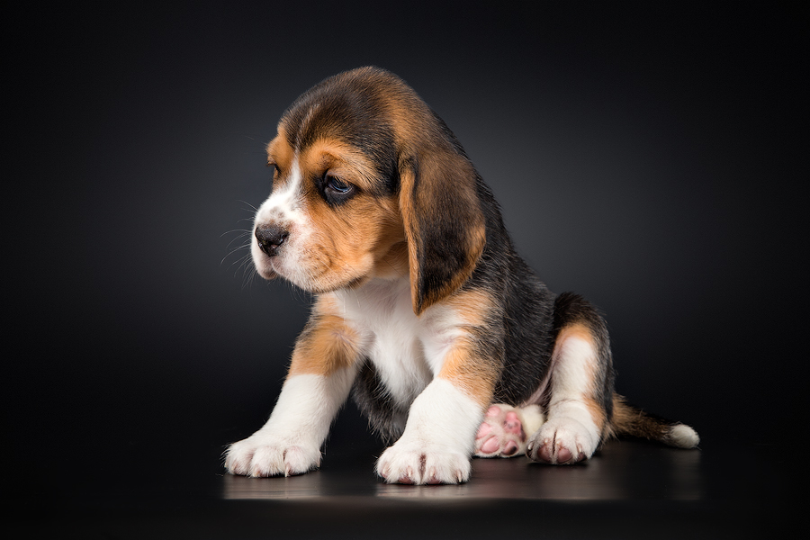
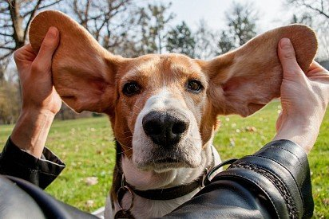
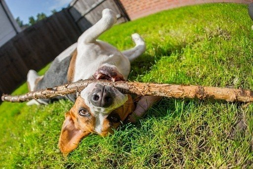
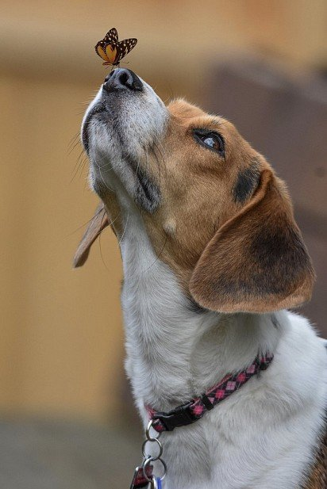

Описание!

Голова
Голова бигля довольно мощная, но не выглядит грубо и неуклюже. Отличается средней длиной, у сук – более утончённая. Кожа не морщинится и не образует складки. Форма черепа напоминает купол. Затылочный бугор незначительно выражен.
Морда
Морда собаки не заострена. Ярко очерченный стоп делит расстояние между мочкой носа и затылочной частью на приблизительно равные отрезки. Это хорошо заметно, когда животное стоит в профиль. Крупный нос с широко открытыми ноздрями преимущественно чёрного цвета. Ослабленная пигментация допустима у биглей светлых окрасов. Губы неплотно прилегают к челюстям, ввиду чего животное выглядит брылястым.
Уши
При вытягивании закруглённые кончики ушей практически достают до носа собаки. Посажены низко и свисают по бокам от морды, прилегая к щёчкам. Тонкие и мягкие на ощупь.
Глаза
Глаза бигля посажены не слишком глубоко, вместе с носом образуют равносторонний треугольник. Цвет – ореховый или тёмно-коричневый. Сухие веки прилегают плотно, имеют тёмную пигментацию. Биглю присущ умный взгляд даже в нередкие минуты озорства.
Челюсти и зубы
Сильные и крепкие челюсти бигля расположены так, что нижние полностью перекрыты верхними, тем самым образуя ножницевидный прикус. Резцы посажены вертикально. В наличии должна быть полная зубная формула.
Шея
Благодаря достаточной длине шеи, бигль без труда следует за добычей. Отличается лёгким изгибом и подвесом.
Корпус
Линия верха плавно переходит в умеренно скошенный круп собаки. Поясница слегка выпуклая, короткая и широкая. Можно сказать, что она неплохо сбалансирована по отношению к остальному корпусу. Глубокая грудная клетка бигля отличается объёмными и хорошо согнутыми рёбрами, опущена ниже уровня локтей. Живот не обвисает.
Хвост
Имеет среднюю длину и высокую посадку. Характеризуется густым шерстяным покровом (особенно на нижней части). Хвост бигля не закручивается и не заваливается у основания.
Передние конечности
Прямые параллельные ноги располагаются под туловищем собаки. Имеют хороший прочный костяк. Косые плечи выделяются развитой мускулатурой. Длинные лопатки прилегают к верхней части корпуса. Локти бигля повёрнуты строго назад. Расстояние от них до поверхности земли составляет половину высоты животного в холке. Короткие пясти переходят в овальные лапы небольшого размера, которые заканчиваются выраженными подушечками и когтями.
Задние конечности
Мускулистые бёдра и прямые голени обеспечивают точные и мощные движения бигля. Коленки собаки отличаются хорошо очерченным углом. Скакательные суставы направлены вниз. Лапы компактны из-за скученных пальцев.
Манера движения
Бигль отталкивается задними конечностями, при этом направляя передние вперёд. Шаг не обременённый и свободный. Для этой породы нехарактерна походка вразвалочку. Спина остаётся ровной; нет ни единого намёка на сутулость.
Шерстяной покров
Бигль – счастливый обладатель короткой и густой шерсти средней жёсткости без подшёрстка. Она отлично защищает от непогоды и не пропитывается влагой в считаные минуты. Во время охоты короткие волоски не цепляются за ветви кустарников. Шерсть плотно прилегает к корпусу собаки и отличается здоровым блеском.
Окрас
Окрас бигля вариативен. Самый распространённый тип – рыже-чёрно-белый (или, как его называют, трёхцветный). Его можно считать классическим, поскольку именно этот окрас представляется человеку, который слышит слово «бигль». Помимо него, распространены рыже-голубо-белый, рыже-белый, красно-белый, лимонно-белый, чёрно-белый, лимонно-пёстрый, заячий и барсучий пёстрые. Все окрасы, кроме полностью белого, могут иметь крап – мелкие пятнышки. Другие варианты недопустимы. Обратите внимание на кончик хвоста животного: он всегда остаётся белым независимо от цвета шерсти.
Обратно